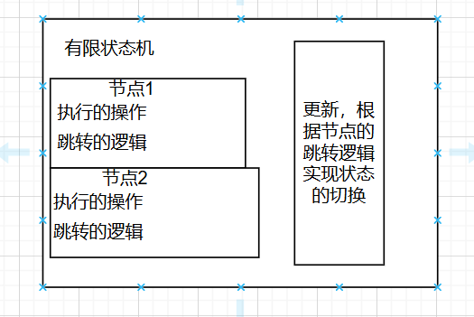
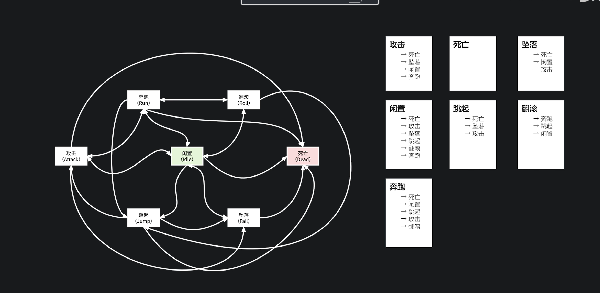

空洞武士笔记6
有限状态机的设计
protected:
StateMachine state_machine;
每一个继承character的对象都有状态机的成员变量。
状态机的设计
状态机的设置也较为简洁
class StateMachine
{
public:
StateMachine();
~StateMachine();
void on_update(float delta);
void set_entry(const std::string& id);
void switch_to(const std::string& id);
void register_state(const std::string& id, StateNode* state_node);
private:
bool need_init = true; //标记当前状态机是否初始化过
StateNode* current_state = nullptr;
std::unordered_map<std::string, StateNode*>state_pool;
};
- register_state注册状态节点，我们可以注意到状态节点类是使用无序图进行管理，利用string查找。
状态节点池子。
设置初始的进入状态set_entry
同时设置状态节点转换的逻辑switch_to
正常的update更新
我们使用状态节点的父类指针去指向当前的节点。
void StateMachine::on_update(float delta)
{
if (!current_state)
return;
if (need_init)
{
current_state->on_enter();
need_init = false;
}
current_state->on_update(delta);
}
- 前面的是当前状态机是否需要初始化，所以暂时可以不管
- 然后就是调用对应的节点的update（）
void StateMachine::switch_to(const std::string& id)
{
if (current_state)
current_state->on_exit();
current_state = state_pool[id];
if (current_state)
current_state->on_enter();
}
- 这个状态切换是状态节点在更新逻辑切换状态时候调用的。
void StateMachine::register_state(const std::string& id, StateNode* state_node)
{
state_pool[id] = state_node;
}
注册状态节点，实现逻辑以前也说过了。
状态节点的设计
首先对于所有的节点先设置基类。
class StateNode
{
public:
StateNode() = default;
~StateNode() = default;
virtual void on_enter(){}
virtual void on_update(float delta){}
virtual void on_exit(){}
private:
};
- 当前节点进入时所需要处理的操作
- 当前节点的更新逻辑
- 当前的节点退出所需要执行的操作
然后节点的实现都是围绕这三个点进行设计实现的。
我们来看看玩家节点的实现，首先我们需要知道节点直接的跳转关系。
我们举一个玩家类的节点实现来解释
class PlayerAttackState:public StateNode
{
public:
PlayerAttackState();
~PlayerAttackState() = default;
void on_enter()override;
void on_update(float delta)override;
void on_exit()override;
private:
Timer timer;
private:
void update_hit_box_position();
};
- 因为攻击状态需要额外启用攻击碰撞箱子，所以位置的更新逻辑放在update_hit_box_position这里实现。
PlayerAttackState::PlayerAttackState()
{
timer.set_wait_time(0.3f);
timer.set_one_shot(true);
timer.set_on_timeout(
[&]()
{
Player* player = (Player*)CharacterManager::instance()->get_player();
player->set_attacking(false);
}
);
}
- 首先就是攻击状态的初始化，由于攻击状态时需要计时器控制，攻击状态结束进行逻辑跳转，所以把计时器的基本逻辑执行好。
void PlayerAttackState::on_enter()
{
CharacterManager::instance()->get_player()->set_animation("attack");
Player* player = (Player*)CharacterManager::instance()->get_player();
player->get_hit_box()->set_enabled(true);
player->set_attacking(true);
update_hit_box_position();
player->on_attack();
timer.restart();
switch (range_random(1,3))
{
case 1:
play_audio(_T("player_attack_1"), false);
break;
case 2:
play_audio(_T("player_attack_2"), false);
break;
case 3:
play_audio(_T("player_attack_3"), false);
break;
}
}
- 当进入到攻击状态节点，我们需要切换当前的动画，设置为attack
- 然后通过角色管理器获取玩家，设置玩家hit箱子的状态，同时修改玩家内部的状态标识，更新hit箱子的位置
- 执行玩家attack（）逻辑，确定播放的特效动画，同时开启攻击冷却计时器。
- 状态计时器重置启动
- 同时播放攻击音效
void PlayerAttackState::on_update(float delta)
{
timer.on_update(delta);
update_hit_box_position();
Player* player = (Player*)CharacterManager::instance()->get_player();
if (player->get_hp() <= 0)
player->switch_state("dead");
else if (!player->get_attacking())
{
if (player->get_velocity().y > 0)
player->switch_state("fall");
else if (player->get_move_axis() == 0)
player->switch_state("idle");
else if (player->is_on_floor() && player->get_move_axis() != 0)
player->switch_state("run");
}
}
- 逻辑很简单，计时器计时，在计时器未到达规定的时间，更新hit箱子的逻辑。
- 如果过程中血量为0，强制跳转dead状态，不然只有等计时器将玩家attacking修改后才能执行跳转逻辑。
- 我们选择if——else实现状态跳转，这里有涉及跳转优先级的逻辑。
void PlayerAttackState::on_exit()
{
Player* player = (Player*)CharacterManager::instance()->get_player();
player->get_hit_box()->set_enabled(false);
player->set_attacking(false); //这里其实可有可无，计时器实现过了
}
- 节点结束时候会执行跳出逻辑，此时结束hit碰撞箱子的启用。
状态机的执行
{
state_machine.register_state("attack", new PlayerAttackState());
state_machine.register_state("dead", new PlayerDeadState());
state_machine.register_state("fall", new PlayerFallState());
state_machine.register_state("idle", new PlayerIdleState());
state_machine.register_state("jump", new PlayerJumpState());
state_machine.register_state("roll", new PlayerRollState());
state_machine.register_state("run", new PlayerRunState());
state_machine.set_entry("idle");
}
我们需要在对象的构造函数里面注册我们实现的节点。
然后在character的update执行
state_machine.on_update(delta);
即可。
至此，我们可以设计玩家的许多状态来管理玩家的状态，在设计状态跳转逻辑，很明显能感觉到像unity里面
实现动画的跳转逻辑，在状态机里面，动画的跳转逻辑之不过是里面的一部分，还涉及了更多。